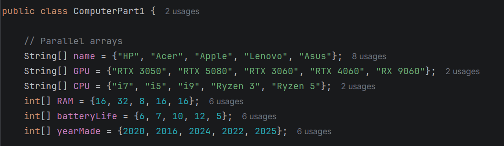

Assignment Intro
The arrays unit was almost a recap of grade 11 computer science as it revolved completely around grade 11 concepts which made it rather easy to complete. For this unit, we learned parallel arrays and to demonstrate our learning, we had to make programs to record and rate a topic of our choice. My group decided to do ours on computers where we compared computer brands based on RAM, battery life and the year of its making. We then used a formula of our choosing to calculate which computer would be rated the highest and lowest.

Programming Concept
The concept behind parallel arrays is that they use separate arrays of information that are the same length to store information so that when an index is accessed, that information can be expressed. In this case, we had 6 parallel arrays, each with 5 different computers with everything from brand name, GPU, CPU, RAM, battery life and year made being stored in either String or int arrays. Later on we accessed these arrays to calculate for the best and worst rated computers.
Challenges
Once again, this was a pretty easy to grasp and understand unit so there weren't any challenges that arose. It was straightforward and aligned with our learning from grade 11 arrays.
Solutions
There was no problem with this personally as it was all pretty basic and straightforward so there was really no solutions that could've been applied.
Reflection
Being somewhat of a recap of the previous semester, it was a really easy concept to grasp which allowed me to complete the assignment with ease while making good time.